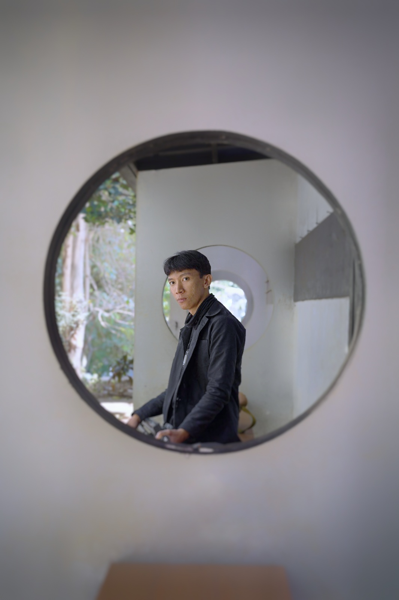

Lulusan S1 Teknik Informatika dari Institut Digital Ekonomi (IDE LPKIA) Bandung yang berfokus pada infrastruktur jaringan komputer, pemeliharaan perangkat keras (IT Support), serta pengolahan data dan pengembangan web.
Memiliki kompetensi teruji dengan sertifikasi internasional MikroTik Certified Network Associate (MTCNA). Siap mengaplikasikan pengetahuan teknis dan pemecahan masalah operasional IT di lingkungan instansi pemerintah maupun perusahaan.
Konfigurasi RouterOS MikroTik, alokasi IP Address, maintenance LAN/Wi-Fi, dan manajemen bandwidth.
Troubleshooting PC/laptop, perbaikan hardware, instalasi Windows/Driver, dan optimasi sistem.
Pengolahan dataset menggunakan Python (Pandas/Scikit-learn), pembuatan aplikasi Laravel, dan SQL.
Penerbit: Mikrotikls SIA (Riga, Latvia)
Institut Digital Ekonomi (IDE LPKIA)
Fokus pada Rekayasa Perangkat Lunak, Struktur Data, Pemrograman Web, Sistem Basis Data, serta Administrasi Jaringan Komputer.
SMKN 14 Bandung
Dasar-dasar pengolahan media digital, logika pemrograman komputer dasar, animasi, dan prinsip desain visual.
Freelance / Proyek Mandiri
Instansi Pendidikan / Sekolah